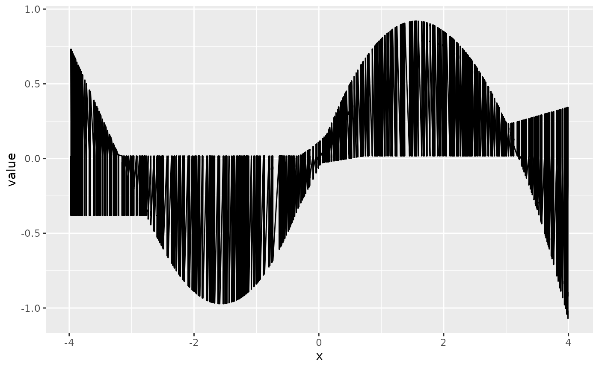
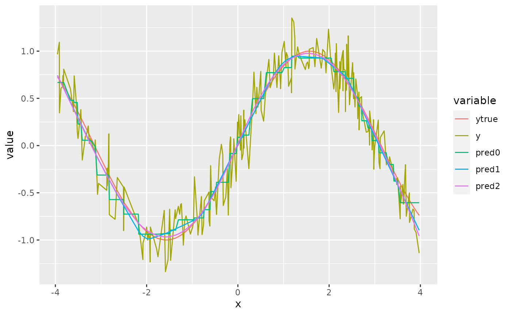

Fitting the Highly Adaptive Lasso with hal9001
Nima Hejazi and Jeremy Coyle
2021-04-09
Source:vignettes/intro_hal9001.Rmd
intro_hal9001.RmdIntroduction
The highly adaptive Lasso (HAL) is a flexible machine learning algorithm that nonparametrically estimates a function based on available data by embedding a set of input observations and covariates in an extremely high-dimensional space (i.e., generating basis functions from the available data). For an input data matrix of \(n\) observations and \(d\) covariates, the number of basis functions generated is approximately \(n \cdot 2^{d - 1}\). To select a set of basis functions from among the full set generated, the Lasso is employed. The hal9001 R package provides an efficient implementation of this routine, relying on the glmnet R package for compatibility with the canonical Lasso implementation while still providing a (faster) custom C++ routine for using the Lasso with an input matrix composed of indicator functions. Consider consulting Benkeser and van der Laan (2016), (???), van der Laan (2017) for detailed theoretical descriptions of the highly adaptive Lasso and its various optimality properties.
Preliminaries
library(data.table)
library(ggplot2)
# simulation constants
set.seed(467392)
n_obs <- 500
n_covars <- 3
# make some training data
x <- replicate(n_covars, rnorm(n_obs))
y <- sin(x[, 1]) + sin(x[, 2]) + rnorm(n_obs, mean = 0, sd = 0.2)
# make some testing data
test_x <- replicate(n_covars, rnorm(n_obs))
test_y <- sin(x[, 1]) + sin(x[, 2]) + rnorm(n_obs, mean = 0, sd = 0.2)Let’s look at simulated data:
head(x)## [,1] [,2] [,3]
## [1,] 2.44102981 -0.4337909 0.4670282
## [2,] -1.21932335 0.3336395 0.8894277
## [3,] -0.40613567 -0.3869374 0.3474353
## [4,] -1.09760477 -1.4663219 -0.1173214
## [5,] 0.23710498 1.2565812 1.8049389
## [6,] 0.06810091 -0.7020905 0.9301941
head(y)## [1] 0.2372289 -0.6023415 -0.7569124 -1.8021339 1.0589707 -0.3373555Using the Highly Adaptive Lasso
## Loading required package: Rcpp## hal9001 v0.3.0: The Scalable Highly Adaptive Lasso
## note: fit_hal defaults have changed. See ?fit_hal for details
Fitting the model: glmnet
HAL uses the popular glmnet R package for the lasso step:
hal_fit <- fit_hal(X = x, Y = y, fit_type = "glmnet")
hal_fit$times## user.self sys.self elapsed user.child sys.child
## enumerate_basis 0.026 0.000 0.026 0 0
## design_matrix 0.138 0.008 0.146 0 0
## reduce_basis 0.000 0.000 0.000 0 0
## remove_duplicates 0.000 0.000 0.000 0 0
## lasso 2.185 0.031 2.221 0 0
## total 2.351 0.039 2.395 0 0While the raw output object may be examined, it has (usually large) slots that make quick examination challenging. Instead, we recommend the summary method, which provides an interpretable table of basis functions with non-zero coefficients.
summary(hal_fit)$table## coef term
## 1: -1.7687874362 Intercept
## 2: 0.1726315141 I(1,2 >= -3.2242)*I(1,3 >= -3.0377)
## 3: 0.0200119716 I(1,3 >= -0.6451)*I(2,3 >= -3.2886)
## 4: 0.0083551475 I(1,2 >= -0.7397)*I(1,3 >= -3.0377)*I(2,3 >= -1.8899)
## 5: 0.0021217969 I(1,2 >= -3.2242)*I(1,3 >= -0.593)*I(2,3 >= -1.5283)
## 6: -0.0005975216 I(1,2 >= 0.3049)*I(1,3 >= -1.4075)*I(2,3 >= -3.2886)
## 7: -0.0245964275 I(1,2 >= -3.2242)*I(1,3 >= 0.4993)*I(2,3 >= -3.2886)Reducing basis functions
As described in Benkeser and van der Laan (2016), the HAL algorithm operates by first constructing a set of basis functions and subsequently fitting a Lasso model with this set of basis functions as the design matrix. Several approaches are considered for reducing this set of basis functions: 1. Removing duplicated basis functions (done by default in the fit_hal function), 2. Removing basis functions that correspond to only a small set of observations; a good rule of thumb is to scale with \(\frac{1}{\sqrt{n}}\).
The second of these two options may be invoked by specifying the reduce_basis argument to the fit_hal function:
hal_fit_reduced <- fit_hal(X = x, Y = y, fit_type = "glmnet",
reduce_basis = 1 / sqrt(length(y)))
hal_fit_reduced$times## user.self sys.self elapsed user.child sys.child
## enumerate_basis 0.021 0.000 0.021 0 0
## design_matrix 0.146 0.000 0.145 0 0
## reduce_basis 0.000 0.000 0.000 0 0
## remove_duplicates 0.000 0.000 0.000 0 0
## lasso 1.737 0.012 1.748 0 0
## total 1.905 0.012 1.916 0 0In the above, all basis functions with fewer than 4.472136% of observations meeting the criterion imposed are automatically removed prior to the Lasso step of fitting the HAL regression. The results appear below
summary(hal_fit_reduced)$table## coef term
## 1: -1.7687874362 Intercept
## 2: 0.1726315141 I(1,2 >= -3.2242)*I(1,3 >= -3.0377)
## 3: 0.0200119716 I(1,3 >= -0.6451)*I(2,3 >= -3.2886)
## 4: 0.0083551475 I(1,2 >= -0.7397)*I(1,3 >= -3.0377)*I(2,3 >= -1.8899)
## 5: 0.0021217969 I(1,2 >= -3.2242)*I(1,3 >= -0.593)*I(2,3 >= -1.5283)
## 6: -0.0005975216 I(1,2 >= 0.3049)*I(1,3 >= -1.4075)*I(2,3 >= -3.2886)
## 7: -0.0245964275 I(1,2 >= -3.2242)*I(1,3 >= 0.4993)*I(2,3 >= -3.2886)Obtaining model predictions
# training sample prediction for HAL vs HAL9000
mse <- function(preds, y) {
mean((preds - y)^2)
}
preds_hal <- predict(object = hal_fit, new_data = x)
mse_hal <- mse(preds = preds_hal, y = y)
mse_hal## [1] 0.1940649
oob_hal <- predict(object = hal_fit, new_data = test_x)
oob_hal_mse <- mse(preds = oob_hal, y = test_y)
oob_hal_mse## [1] 1.540186
Specifying smoothness of fit and improving runtime with the num_knots
One might wish to enforce smoothness on the functional form of the HAL fit. This can be done using the “smoothness_orders” argument. Setting smoothness_orders = 0 gives a piece-wise constant fit, allowing for discontinuous jumps in the function. This is useful if one does not want to assume any smoothness of the “true” function (not even continuity). Setting smoothness_orders = 1 gives a piece-wise linear fit which is continuous and mostly differentiable. In general smoothness_orders = k corresponds to a piece-wise polynomial fit of degree k. Mathematically, smoothness_orders = k corresponds with finding the best fit under the constraint that the total variation of the function’s k-th deriviative is bounded by some constant (chosen by CV).
Let us see this in action. We will use the num_knots argument to increase the coarseness of the approximation so that the difference between smooth and unsmooth fits is more clear (see next section). Specifically, we set num_knots = 7. The argument num_knots allows one to specify the number of knot points used to generate the basis functions (for each interaction degree). This effectivelly reduces the total number of basis functions generated and can significantly decrease runtime by reducing the size of the optimization problem. One can pass in a vector of length max_degree specifying the number of knot points to use by interaction degree for each basis function. Thus, one can specify that two or three way interaction basis functions should be more coarse, which helps prevent the combinatorical explosion of basis functions that occurs when basis functions are generated for all possible knot points.
set.seed(98109)
num_knots <- 500 # Try changing this value to see what happens.
n_covars <- 1
n_obs <- 500
x <- replicate(n_covars, runif(n_obs, min = -4, max = 4))
y <- sin(x[, 1]) + rnorm(n_obs, mean = 0, sd = 0.2)
ytrue <- sin(x[, 1])
hal_fit_0 <- fit_hal(X = x, Y = y, fit_type = "glmnet",
smoothness_orders = 0, num_knots = num_knots,
lambda.min.ratio = 1e-4)
hal_fit_smooth_1 <- fit_hal(X = x, Y = y, fit_type = "glmnet",
smoothness_orders = 1,
num_knots = num_knots,
lambda.min.ratio = 1e-4)
hal_fit_smooth_2_all <- fit_hal(X = x, Y = y, fit_type = "glmnet",
smoothness_orders = 2,
num_knots = num_knots,
adaptive_smoothing = FALSE,
cv_select = FALSE,
lambda.min.ratio = 1e-3)
hal_fit_smooth_2 <- fit_hal(X = x, Y = y, fit_type = "glmnet",
smoothness_orders = 2,
num_knots = num_knots,
adaptive_smoothing = FALSE,
cv_select = TRUE,
lambda.min.ratio = 1e-4)
pred_0 <- predict(hal_fit_0, new_data = x)
pred_smooth_1 <- predict(hal_fit_smooth_1, new_data = x)
pred_smooth_2 <- predict(hal_fit_smooth_2, new_data = x)
pred_smooth_2_all <- predict(hal_fit_smooth_2_all, new_data = x)
dt <- data.table(x = as.vector(x))
dt <- cbind(dt, pred_smooth_2_all)
long <- melt(dt, id = "x")
ggplot(long, aes(x = x, y = value, group = variable)) + geom_line()
Comparing the mean-squared-error between the predictions and the true (denoised) outcome, we see that the first and second order smoothness HAL is able to recover from the coarseness of the basis functions caused by the small num_knots argument. We see that the second order smoothness HAL is able to fit the true function very well (as expected since sin(x) is a very smooth function). The main benefit of imposing higher order smoothness is that fewer knot points are required for a near optimal fit. Thus one can pass a smaller value to the num_knots argument for a big decrease in runtime.
mean((pred_0 - ytrue)^2)## [1] 0.003327325
mean((pred_smooth_1- ytrue)^2)## [1] 0.0006370113
mean((pred_smooth_2 - ytrue)^2)## [1] 0.0008864687
dt <- data.table(x = as.vector(x),
ytrue = ytrue,
y = y,
pred0 = pred_0,
pred1 = pred_smooth_1,
pred2 = pred_smooth_2)
long <- melt(dt, id = "x")
ggplot(long, aes(x = x, y = value, color = variable)) + geom_line()
plot(x, pred_0, main = "Zero order smoothness fit")
plot(x, pred_smooth_1, main = "First order smoothness fit")
plot(x, pred_smooth_2, main = "Second order smoothness fit")In general, if we do not make the basis functions coarse, the performance for different smoothness orders is similar. Notice how the runtime is a fair bit slower when we generate more knot points. In general, we recommend either zero or first order smoothness. Second order smoothness tends to be less robust and suffers from extrapolation on new data. One can also use cross-validation to data-adaptively choose the optimal smoothness. Interestingly, comparing the following simulation and the previous one, we see that the second order smoothness HAL performed better when there were fewer knot points.
set.seed(98109)
num_knots <- 300
n_covars <- 1
n_obs <- 500
x <- replicate(n_covars, runif(n_obs, min = -4, max = 4))
y <- sin(x[, 1]) + rnorm(n_obs, mean = 0, sd = 0.2)
ytrue <- sin(x[, 1])
hal_fit_0 <- fit_hal(X = x, Y = y, fit_type = "glmnet",
smoothness_orders = 0, num_knots = num_knots)
hal_fit_smooth_1 <- fit_hal(X = x, Y = y, fit_type = "glmnet",
smoothness_orders = 1, num_knots = num_knots)
hal_fit_smooth_2 <- fit_hal(X = x, Y = y, fit_type = "glmnet",
smoothness_orders = 2, num_knots = num_knots)
pred_0 <- predict(hal_fit_0, new_data = x)
pred_smooth_1 <- predict(hal_fit_smooth_1, new_data = x)
pred_smooth_2 <- predict(hal_fit_smooth_2, new_data = x)
mean((pred_0 - ytrue)^2)## [1] 0.003323484
mean((pred_smooth_1- ytrue)^2)## [1] 0.0006508832
mean((pred_smooth_2 - ytrue)^2)## [1] 0.0008376741
plot(x, pred_0, main = "Zero order smoothness fit")
plot(x, pred_smooth_1, main = "First order smoothness fit")
plot(x, pred_smooth_2, main = "Second order smoothness fit")
Note for higher dimensional models, one can specify the smoothness in each variable by passing in a vector of smoothness orders of length ncol(X). See documentation for more details.
Formula interface
One might wish to specify the functional form of the HAL fit further. This can be done using the formula interface. Specifically, the formula interface allows one to specify monotonicity constraints on components of the HAL fit, as well as specify exactly which basis functions (e.g., interactions) one wishes to model. First, we need to generate a formula object containing the necessary specification information. Later, we will see how to use this formula object to fit HAL. Note any arguments that one wishes to pass to fit_hal should be passed instead to the formula_hal function.
set.seed(98109)
num_knots <- 100
n_obs <- 500
x1 <- runif(n_obs, min = -4, max = 4)
x2 <- runif(n_obs, min = -4, max = 4)
A <- runif(n_obs, min = -4, max = 4)
y <- rowMeans(sin(x)) + rnorm(n_obs, mean = 0, sd = 0.2)
ytrue <- rowMeans(sin(x))
# The formula interface requires us to input a data.frame with all variables
# including outcome.
data <- data.frame(x1 = x1, x2 = x2, A = A, y = y)We can specify an additive model in a number of ways. We can print the formula object obtained by calling formula_hal to see some helpful information about our HAL specification.
formula <- formula_hal("y ~ h(x1) + h(x2) + h(A)", data,
smoothness_orders = 1, num_knots = 100)
print(formula, expand = TRUE)## Functional specification for hal9001 fit:
## Call: y ~ h(x1) + h(x2) + h(A)
## Formula: y ~ h(x1) + h(x2) + h(A)
## Expanded Formula: y ~ h(x1) + h(x2) + h(A)
## Number of smooth variables: 3
## Smoothness range: 1 -> 1
## Number of basis functions: 300
## Number of monotone-increasing basis functions: 0
## Number of monotone-decreasing basis functions: 0
print(" ")## [1] " "
formula <- formula_hal("y ~ .", data, smoothness_orders = 1, num_knots = 100)
print(formula, expand = TRUE)## Functional specification for hal9001 fit:
## Call: y ~ .
## Formula: y ~ .
## Expanded Formula: y ~ h(x1) + h(x2) + h(A)
## Number of smooth variables: 3
## Smoothness range: 1 -> 1
## Number of basis functions: 300
## Number of monotone-increasing basis functions: 0
## Number of monotone-decreasing basis functions: 0We can specify higher order interactions as follows.
formula <- formula_hal(
"y ~ h(x1) + h(x2) + h(A) + h(x1, x2) + h(x2, A) + h(x1, A) + h(x1, x2, A)",
data, smoothness_orders = 1, num_knots = 100
)
print(formula$formula_expanded)## [1] "y ~ h(x1) + h(x2) + h(A) + h(x1,x2) + h(x2,A) + h(x1,A) + h(x1,x2,A)"
formula <- formula_hal("y ~ .^2", data, smoothness_orders = 1, num_knots = 100)
print(formula$formula_expanded)## [1] "y ~ h(x1) + h(x2) + h(A) + h(x1,x2) + h(x1,A) + h(x2,A)"
formula <- formula_hal("y ~ .^3", data, smoothness_orders = 1, num_knots = 100)
print(formula$formula_expanded)## [1] "y ~ h(x1) + h(x2) + h(A) + h(x1,x2) + h(x1,A) + h(x2,A) + h(x1,x2,A)"Sometimes, you may want to build an additive model but include all two way interactions with one variable “A” (e.g., treatment). This can be done in a variety of ways as follows.
# Write it all out
formula <- formula_hal("y ~ h(x1) + h(x2) + h(A) + h(A, x1) + h(A,x2)", data,
smoothness_orders = 1, num_knots = 100)
print(formula$formula_expanded)## [1] "y ~ h(x1) + h(x2) + h(A) + h(x1,A) + h(x2,A)"
# Use the "." which stands for add all additive terms and then manually add
# interactions
formula <- formula_hal("y ~ . + h(A,x1) + h(A,x2)", data,
smoothness_orders = 1, num_knots = 100)
print(formula$formula_expanded)## [1] "y ~ h(x1) + h(x2) + h(A) + h(x1,A) + h(x2,A)"
# Use the "wildcard" feature for when "." is included in the "h()" term. This
# useful when you have many variables and do not want to write out every term.
formula <- formula_hal("y ~ . + h(A,.)", data, smoothness_orders =1,
num_knots = 100)
print(formula$formula_expanded)## [1] "y ~ h(x1) + h(x2) + h(A) + h(x1,A) + h(x2,A)"Here are some other shortcuts inspired by the glm formula interace.
# The "*" operation generates lower order interactions as well.
formula <- formula_hal("y ~ h(x1)*h(x2)", data,
smoothness_orders = 1, num_knots = 100)
print(formula$formula_expanded)## [1] "y ~ h(x1) + h(x2) + h(x1,x2)"
formula <- formula_hal("y ~ h(x1) + h(x2) + h(x1,x2)", data,
smoothness_orders = 1, num_knots = 100)
print(formula$formula_expanded)## [1] "y ~ h(x1) + h(x2) + h(x1,x2)"
# The ":" operator generates an interaction term.
formula <- formula_hal("y ~ h(x1) + h(x2) + h(x1):h(x2)", data,
smoothness_orders = 1, num_knots = 100)
print(formula$formula_expanded)## [1] "y ~ h(x1) + h(x2) + h(x1,x2)"Another interesting feature allows one to define custom wildcard symbols analagous to “.” that specifies groups, using the custom_group argument. The custom group argument should be a named list (with one character names) whose elements are character vectors of variable names. This allows one to generate interactions between user supplied groups.
custom_group <- list("a" = c("x1", "x2"), "b" = c("A"))
formula <- formula_hal("y ~ h(a)", data, smoothness_orders = 1,
num_knots = 100, custom_group = custom_group)
print(formula$formula_expanded)## [1] "y ~ h(x1) + h(x2)"
formula <- formula_hal("y ~ h(a, b)", data, smoothness_orders = 1,
num_knots = 100, custom_group = custom_group)
print(formula$formula_expanded)## [1] "y ~ h(x1,A) + h(x2,A)"
formula <- formula_hal("y ~ h(a) + h(a, b)", data, smoothness_orders = 1,
num_knots = 100, custom_group = custom_group)
print(formula$formula_expanded)## [1] "y ~ h(x1) + h(x2) + h(x1,A) + h(x2,A)"
formula <- formula_hal("y ~ h(a, b, x1)", data, smoothness_orders = 1,
num_knots = 100, custom_group = custom_group)
print(formula$formula_expanded)## [1] "y ~ h(x1,x2,A)"
formula <- formula_hal("y ~ h(a, b, a)", data, smoothness_orders = 1,
num_knots = 100, custom_group = custom_group)
print(formula$formula_expanded)## [1] "y ~ h(x1,x2,A)"So far we have ignored a key feature of the formula interface that is not available in the generic fit_hal function: monotonicity constraints. This is done by replacing the “h” with either “i” (for monotonely increasing) or “d” (for monotonely decreasing). It’s simple.
# An additive monotone increasing model
formula <- formula_hal("y ~ i(.)", data, smoothness_orders = 1,
num_knots = 100)
print(formula, expand = TRUE)## Functional specification for hal9001 fit:
## Call: y ~ i(.)
## Formula: y ~ i(.)
## Expanded Formula: y ~ i(x1) + i(x2) + i(A)
## Number of smooth variables: 3
## Smoothness range: 1 -> 1
## Number of basis functions: 300
## Number of monotone-increasing basis functions: 300
## Number of monotone-decreasing basis functions: 0
print(" ")## [1] " "
# A bi-additive monotone decreasing model
formula <- formula_hal("y ~ d(.) + d(.,.)", data, smoothness_orders = 1,
num_knots = 100)
print(formula, expand = TRUE)## Functional specification for hal9001 fit:
## Call: y ~ d(.) + d(.,.)
## Formula: y ~ d(.) + d(.,.)
## Expanded Formula: y ~ d(x1) + d(x2) + d(A) + d(x1,x2) + d(x1,A) + d(x2,A)
## Number of smooth variables: 3
## Smoothness range: 1 -> 1
## Number of basis functions: 1779
## Number of monotone-increasing basis functions: 0
## Number of monotone-decreasing basis functions: 1779
print(" ")## [1] " "
# mix it up
formula <- formula_hal("y ~ d(x1) + i(x2) + h(A) + h(.,.)", data,
smoothness_orders = 1, num_knots = 100)
print(formula, expand = TRUE)## Functional specification for hal9001 fit:
## Call: y ~ d(x1) + i(x2) + h(A) + h(.,.)
## Formula: y ~ d(x1) + i(x2) + h(A) + h(.,.)
## Expanded Formula: y ~ d(x1) + i(x2) + h(A) + h(x1,x2) + h(x1,A) + h(x2,A)
## Number of smooth variables: 3
## Smoothness range: 1 -> 1
## Number of basis functions: 1779
## Number of monotone-increasing basis functions: 100
## Number of monotone-decreasing basis functions: 100Now, let’s fit some custom HALs. This is easy using the S3-class-based fit_hal function:
# get formula object
formula <- formula_hal("y ~ .", data, smoothness_orders = 1, num_knots = 100)
fit <- fit_hal_formula(formula)
plot(predict(fit, new_data = formula$X), formula$Y)References
Benkeser, David, and Mark J van der Laan. 2016. “The Highly Adaptive Lasso Estimator.” In 2016 IEEE International Conference on Data Science and Advanced Analytics (DSAA). IEEE. https://doi.org/10.1109/dsaa.2016.93.
van der Laan, Mark J. 2017. “Finite Sample Inference for Targeted Learning.” https://arxiv.org/abs/1708.09502.